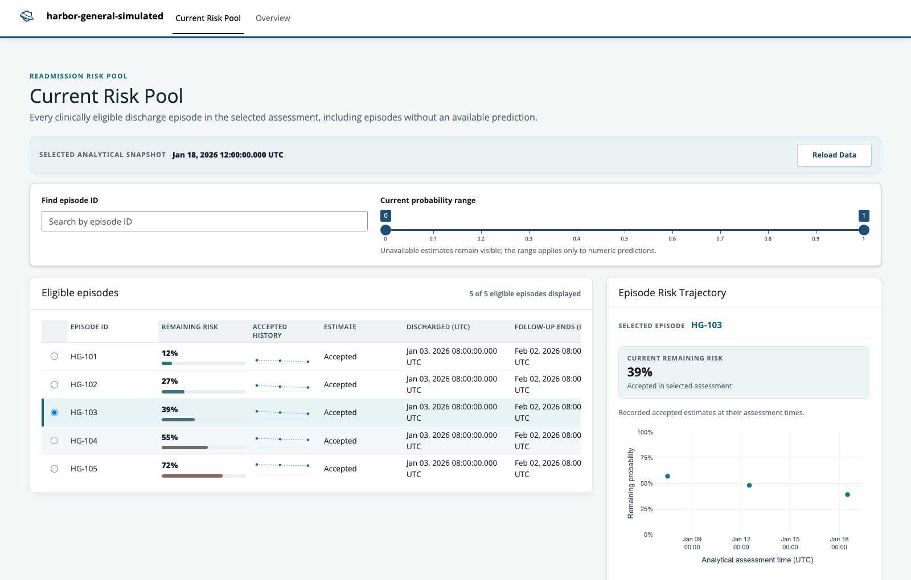

Own the implementation
Start with an ordinary project directory containing editable source-mapping and risk-provider scripts, configuration, branding, and its own Shiny app.
READMISSION RISK POOL · ANALYTICAL PLATFORM
Readmission Risk Pool (RRP) connects an organization’s data and risk provider to repeated, point-in-time assessments. The readmit R package supplies the shared analytical workflow, retained history, and a project-owned application.
A REPEATABLE WORKFLOW
THE ANALYTICAL QUESTION
As follow-up time passes and new information becomes available, the set of eligible discharge episodes can change. A later assessment asks about the remaining probability of a first hospital readmission strictly after that time and through 30 elapsed days after the original discharge. Each assessment keeps the original endpoint; it does not restart the 30-day window.
RRP applies shared eligibility rules to the episodes an organization supplies, records accepted estimates and other dispositions at each chosen time, and derives current-risk, trajectory, and operational-summary products. Its trajectories are recorded assessments, not continuous predictions between runs.
WHAT THE PLATFORM ENABLES
The organization controls clinical sources, mapping, the risk provider, and how results are evaluated and used. readmit provides the shared structure around those choices.
Start with an ordinary project directory containing editable source-mapping and risk-provider scripts, configuration, branding, and its own Shiny app.
Apply discharge-anchored eligibility and point-in-time event availability before requesting risk for eligible episodes.
Retain completed runs, including accepted estimates, provider failures, and ineligible episodes, so earlier results remain inspectable.
Refresh CSV products from history and explore current remaining risk, recorded episode trajectories, and operational scope in the project app.
THE PROJECT-OWNED APPLICATION
The existing application lists eligible discharge episodes and their current estimates. Selecting an episode reveals its accepted assessments across runs.

START WITH READMIT
Install readmit 1.0.0 from CRAN, then use the short walkthrough or the complete simulated-hospital guide.
install.packages("readmit")Project authors supply source mapping and a risk provider. RRP does not include a clinically validated model.
Getting startedA short, installed vignette for the project workflow. Implementation guideA full simulated-hospital walkthrough with source mapping and a demonstration model. Function referencePackage operations, arguments, and examples. GitHub repositorySource code, issues, and the current development version.